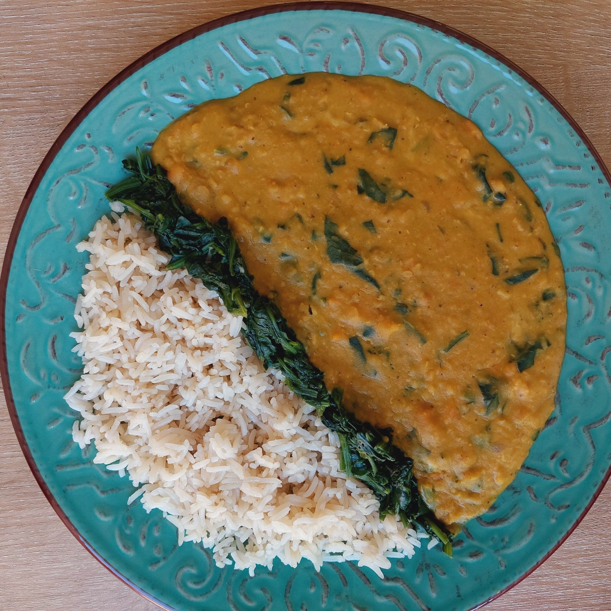

About me
Welcome to Soulfully Vegan. I’m Helen and I’m the face behind this website. Whether you are vegan or not, there are plenty of things you can check out in here.

Savoury
My main goal with this blog is to educate about a vegan lifestyle that aligns with your ethics and benefits your own health and the environment.

Sweet
Sharing my recipes is a way to spread the vegan message and inspire people from all around the world.
Let's get cooking!